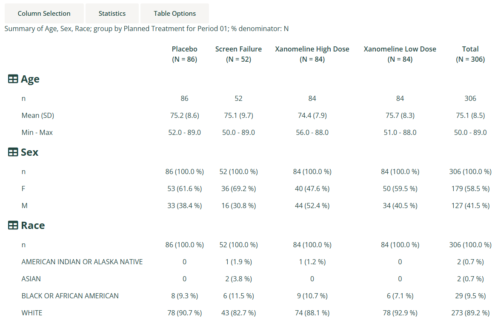

This guide provides a detailed overview of the
dv.tables::mod_summary_table() module and its features. It
is meant to provide guidance to App Creators on creating Apps in DaVinci
using the module. Walk-throughs for sample app creation using the module
are also included to demonstrate the various module specific
features.
The module makes it possible to visualize summary statistics on one or more numerical or categorical analysis variables grouped by variables from the population and analysis datasets.
Features
- Summary statistics for one or more analysis variables, either count and percent for categorical data variables, or a selection of statistics for numerical data variables.
- Multiple levels of grouping by population dataset variables define the columns of the summary table, with group population size (N) displayed for each column. A special grouping level derived from one or more population flagging variables can also be used.
- An optional “Total” group can be derived and displayed for the first population grouping level.
- In addition to the top-level analysis variable sections, further levels of grouping by analysis dataset variables define the row hierarchy of the summary table.
- Optional aggregation of multiple subject results corresponding to a grouping (e.g. multiple lab results for a subject at a single visit) can be specified using an aggregation function.
- Analysis variable sections and row groups can be individually collapsed/hidden.
- It supports bookmarking.
Arguments for the module
The dv.tables::mod_summary_table() module uses several
mandatory arguments with the rest of the arguments defaulted or
optional. As part of app creation, the app creator should specify the
values for all mandatory arguments, and values for any other arguments
as applicable.
Mandatory Arguments
-
module_id: A unique identifier of type character for the module in the app. -
table_dataset_name: The name of the dataset that contains the analysis variables to be summarized, e.g.,"ADLB". -
pop_dataset_name: The name of the dataset that contains the population grouping variables. Typically this will be a one-record-per-subject dataset, e.g.,"ADSL", but may also be one-record-per-subject-per-group to accommodate crossover and summary population analyses.
Please refer to dv.tables::mod_summary_table() for the
complete list of arguments and their description.
Input menus
A drop-down “Column Selection” menu provides the following inputs:
-
Summarize on: Selection of one or more
numerical/categorical analysis variables from the analysis dataset, to
be summarized, e.g.
AVAL,CHG,AGE,SEX,RACE, etc. -
Group by: Selection of one or more grouping
variables from the population dataset, to be displayed across the top of
the table, e.g.
ARM,TRT01P,SEX,RACE, etc. -
Row by: Selection of one or more grouping variables
from the analysis dataset, to group each analysis variable,
e.g.
PARAM,AVISIT, etc. -
Population flags: Selection of one or more flagging
variables from the population dataset, to be displayed across the top of
the table. The flags are subsetting on
"Y"values. This selection and the associated checkbox are shown only if the app creator has specifically enabled population flags. - Move after grouping variables: Checkbox that controls whether the flags should be moved to after (below) the grouping variables. Otherwise, they will appear before (above) the grouping variables.
A drop-down “Statistics” menu provides the following inputs:
- Statistics for numerical analysis: A list of checkboxes controlling which summary statistics are displayed for the numerical analysis variables.
A drop-down “Table Options” menu provides the following inputs:
- Show a total column: Checkbox that controls whether or not to display a “Total” column totalling data from all group categories for the first population grouping level.
-
Drop NA values from groupings/categories: Checkbox
that controls whether or not to exclude rows from population and
analysis datasets when any ‘Group by’ or ‘Row by’ variable value is
missing (
NA), and exclude rows from the analysis dataset when a categorical analysis variable value is missing. Note that rows are always excluded from the analysis dataset when a numerical analysis variable value is missing. - Remove rows with no data: Checkbox that controls whether to hide rows that have no analysis data. Row groupings can result in many unwanted combinations, e.g. when grouped by parameter and visit, by default all combinations of parameters and visits are shown, but if a parameter is not assessed at certain visit then it does not make sense to display a row for that visit.
- Remove columns with no data: Checkbox that controls whether to hide columns that have no subject population data. Population groupings can result in many unwanted combinations, e.g. when grouped by population flags and treatment groups, by default all combinations of population flags and treatment groups are shown, but if a treatment group does not occur for a certain population flag then it does not make sense to display a column for that treatment group.
- Show categorical n: Checkbox that determines whether to show the ‘n’ category when summarizing categorical data.
-
Denominator used for categorical %: Radio buttons
that determine the denominator choice for categorical data, either the
number of subjects from the population grouping (“N”) or the number of
subjects from the ‘Row by’ grouping for each population grouping (“n”).
If the user selects to drop
NAvalues then those values will be excluded from determining the “n” denominator. - Multi-value aggregation method: Radio buttons that determine the method to use for aggregating rows when more than one row per subject exists after population grouping and row categorization has been applied. The method is applied to the analysis variable. These buttons are shown only if the app creator has specifically enabled aggregation.
Visualizations
Demographic Summary table
A collapsible demographic analysis summary table. The subject-level
population dataset name is passed to both the
table_dataset_name and pop_dataset_name
arguments.

Creating a summary table application
Example 1
The following code specifies the bare minimum module arguments with no default analysis, group or row variables specified:
Example 2
The following code specifies module arguments for the summary of age statistics and sex and race categories by planned treatment group:
dv.manager::run_app(
data = list(pharmaverseadam = list(adsl = pharmaverseadam::adsl)),
module_list = list(
"ADSL Summary Table" = dv.tables::mod_summary_table(
module_id = "summary_table",
table_dataset_name = "adsl",
pop_dataset_name = "adsl",
default_summarize_on = c("AGE", "SEX", "RACE"),
default_group_by = c("TRT01P"),
default_stats = c("n", "meansd", "meanci", "minmax")
)
),
filter_data = "adsl",
filter_key = "USUBJID"
)Example 3
The following code specifies module arguments for the summary of laboratory analysis values and change from baseline statistics, and toxicity grade categories by planned treatment group and sex, with rows grouped by parameter and visit:
adsl <- pharmaverseadam::adsl
adlb <- pharmaverseadam::adlb |>
dplyr::filter(.data[["LBTESTCD"]] %in% c("ALP", "ALT", "AST", "BILI"),
.data[["AVISITN"]] %in% c(0, 4, 5, 7))
dv.manager::run_app(
data = list(pharmaverseadam = list(adsl = adsl, adlb = adlb)),
module_list = list(
"ADLB Summary Table" = dv.tables::mod_summary_table(
module_id = "summary_table",
table_dataset_name = "adlb",
pop_dataset_name = "adsl",
show_aggregate_method = TRUE,
default_summarize_on = c("AVAL", "CHG", "ATOXGR"),
default_group_by = c("TRT01P", "SEX"),
default_row_by = c("PARAM", "VISIT"),
default_denom = "n",
default_aggregate_method = "max"
)
),
filter_data = "adsl",
filter_key = "USUBJID"
)The aggregation functionality has been turned on
(show_aggregate_method = TRUE) and the max
function has been specified for the default aggregation method, so if a
subject has more than one lab result for a specific parameter and visit,
then the maximum value will be taken before it gets processed in the
main statistical analysis. The app creator needs to decide on the most
appropriate aggregation functions (which can be specified by
choices_aggregate_method), but only a single aggregation
function can be applied atv a time; it is not possible to handle cases
where the aggregation method varies between parameters - in this case
the data would need to be pre-processed/aggregated before being passed
to the app.
Note: Summarizing large datasets with more than one grouping can take a long time to process so pre-subsetting on the values of interest is recommended. If subsetting was not applied to the above example, then it would take around 15 minutes to process.
Example 4
The following code specifies example pre-processing and module arguments for a population summary table with populations displayed across the top of the table, and linking to patient profiles enabled:
adsl <- pharmaverseadam::adsl
adsl <- pharmaverseadam::adsl |>
dplyr::mutate(ENRLFL = "Y",
TRTFL = ifelse(is.na(TRTSDT), "N", "Y"),
RANDFL = ifelse(is.na(RANDDT), "N", "Y"),
DISCFL = ifelse(EOSSTT == "DISCONTINUED", "Y", "N"))
attr(adsl[["ENRLFL"]], "label") <- "Enrolled Flag"
attr(adsl[["RANDFL"]], "label") <- "Randomized Flag"
attr(adsl[["TRTFL"]], "label") <- "Treated Flag"
attr(adsl[["DISCFL"]], "label") <- "Discontinued Flag"
dv.manager::run_app(
data = list(pharmaverseadam = list(adsl = adsl)),
module_list = list(
"Population Summary" = mod_summary_table(
module_id = "pop_summtab",
show_pop_flag_selection = TRUE,
table_dataset_name = "adsl",
pop_dataset_name = "adsl",
default_summarize_on = c("SITEID"),
default_group_by = NULL,
default_row_by = c("COUNTRY"),
default_total = FALSE,
default_drop_na = TRUE,
default_drop_empty_rows = TRUE,
default_show_category_n = FALSE,
default_pop_flags = c("ENRLFL", "RANDFL", "TRTFL", "DISCFL"),
default_pop_flags_after_groups = FALSE,
receiver_id = "papo"
),
"Patient Profile" = dv.papo::mod_patient_profile(
module_id = "papo",
subject_level_dataset_name = "adsl",
subjid_var = "USUBJID",
sender_ids = c("pop_summtab"),
summary = list(vars = c("AGE", "SEX", "RACE", "ETHNIC", "ARM"),
column_count = 1)
)
),
filter_data = "adsl",
filter_key = "USUBJID"
)User-defined statistics for numerical analysis
A named list of statistical functions is passed to the
stats_functions argument. The default is as follows:
stats_functions = list(
n = length,
mean = mean,
sd = stats::sd,
meanci = \(x) if (length(x) > 1L) stats::t.test(x, conf.level = 0.95)$conf.int else rep(NA_real_, 2L),
geomean = \(x) if (all(x > 0)) exp(mean(log(x))) else NaN,
median = stats::median,
medianci = \(x) if (length(x) > 1L) stats::wilcox.test(x, exact = FALSE, conf.int = TRUE, conf.level = 0.95)$conf.int else rep(NA_real_, 2L),
q1q3 = \(x) stats::quantile(x, c(0.25, 0.75)),
min = min,
max = max
)The functions must either return a single numeric value
(e.g. mean, stats::sd, etc.) or a vector of
numeric values
(e.g. \(x) stats::quantile(x, c(0.25, 0.75))). Note that
the functions will not be applied to empty groupings, but if a function
requires more than one data point (e.g. stats::t.test) then
the error cases must be dealt with using a wrapper function:
meanci = function(x) {
if (length(x) > 1L) { # At least 2 values needed for t.test
stats::t.test(x, conf.level = 0.95)$conf.int
} else { # Return tuple of NA values
rep(NA_real_, 2L)
}
}When such functions return multiple values, those values can be
referred to in stats_formats, stats_labels,
and stats_replace by appending a dot followed by an
incremented integer. So for the example of meanci which
returns two values, those values can be referred to as
meanci.1 and meanci.2 respectively.
User-defined combination and formatting of statistics for numerical analysis
A named list of formats can be passed to the
stats_formats argument. The default is as follows:
stats_formats = list(
n = list(fmt = "%d", "n"),
meansd = list(fmt = "%.1f (%.1f)", "mean", "sd"),
meanci = list(fmt = "(%.2f, %.2f)", "meanci.1", "meanci.2"),
geomean = list(fmt = "%.1f", "geomean"),
median = list(fmt = "%.1f", "median"),
medianci = list(fmt = "(%.2f, %.2f)", "medianci.1", "medianci.2"),
q1q3 = list(fmt = "%.1f - %.1f", "q1q3.1", "q1q3.2"),
minmax = list(fmt = "%.1f - %.1f", "min", "max")
)Each format is a list of arguments passed to
sprintf(fmt, ...), typically the fmt argument
first, followed by all the insertion values.
Values from single return value statistical functions defined in
stats_functions are referred to by the name of the
stats_functions list element (like "n",
"mean" and "sd" in the default). Values from
multi-value return statistical functions must be referred to using their
integer suffix (like "meanci.1" and "meanci.2"
in the default).
The formatted result is assigned to the element name (internally
corresponding to an interim results data frame column name). Any results
from functions given in stats_functions that do not appear
in the formatting will be automatically formatted as character.
User-defined labelling of statistics for numerical analysis
A named vector of statistics labels can be passed to the
stats_labels argument. The default is as follows:
stats_labels = c(
n = "n",
meansd = "Mean (SD)",
meanci = "Mean 95% CI",
geomean = "Geometric Mean",
median = "Median",
medianci = "Median 95% CI",
q1q3 = "25% and 75%-ile",
minmax = "Min - Max"
)The names correspond either to the names assigned in the
stats_formats list, or otherwise the names in the
stats_functions list.
Labels apply to UI statistics checkbox labels and table statistics
labels. Note that if a function defined in stats_functions
returns more than one value, e.g. stats::quantile, and
those values are not combined in stats_formats, then they
appear separately in the table statistics, but the UI statistics
checkbox will reflect the name given to the function definition. Labels
can be applied to both cases, for example:
stats_functions = list(
...
meanci = \(x) if (length(x) > 1L) stats::t.test(x, conf.level = 0.95)$conf.int else rep(NA_real_, 2L),
...
),
stats_formats = list(
...
meanci.1 = list(fmt = "%.2f", "meanci.1"),
meanci.2 = list(fmt = "%.2f", "meanci.2"),
...
),
stats_labels = c(
...
meanci = "Mean 95% CI", # Appears as text in UI checkbox
meanci.1 = "Mean 95% CI (lower)", # Appears as table statistic text
meanci.2 = "Mean 95% CI (upper)", # Appears as table statistic text
...
)User-defined formatted value replacements for numerical analysis
A named list of formatted value replacements can be passed to the
stats_replace argument. Primarily this is used for
presentation formatting, such as replacing values like NA
and NaN with zeros, dashes or NE. Each
replacement is a list(pattern =, replacement =) pair, where
pattern is a regular expression matched against the
formatted result and replacement is the string substituted
in; pairs are applied in order. The default is as follows:
stats_replace = list(
n = list(list(pattern = "^NA$", replacement = "0")),
meansd = list(
list(pattern = "^NA \\(NA\\)$", replacement = SUMMTAB$VAL$EM_DASH),
list(pattern = "\\(NA\\)$", replacement = sprintf("(%s)", SUMMTAB$VAL$EM_DASH))
),
meanci = list(list(pattern = "^\\(NA, NA\\)$", replacement = SUMMTAB$VAL$EM_DASH)),
geomean = list(
list(pattern = "^NA$", replacement = SUMMTAB$VAL$EM_DASH),
list(pattern = "^NaN$", replacement = "NE")
),
median = list(list(pattern = "^NA$", replacement = SUMMTAB$VAL$EM_DASH)),
medianci = list(list(pattern = "^\\(NA, NA\\)$", replacement = SUMMTAB$VAL$EM_DASH)),
q1q3 = list(list(pattern = "^NA - NA$", replacement = SUMMTAB$VAL$EM_DASH)),
minmax = list(list(pattern = "^NA - NA$", replacement = SUMMTAB$VAL$EM_DASH))
)The name of each element of the outer list directly corresponds to a
name from the stats_formats list.
Each of those elements is a named vector defining regular expression substitutions to be applied for that formatted statistic. The names given to the vector elements are regular expressions to match the formatted results, and the elements themselves are the replacement strings.
In the default, the em dash (long dash) has been specified by the
package constant SUMMTAB$VAL$EM_DASH, but the unicode
value, "\u2014", can also be directly used.